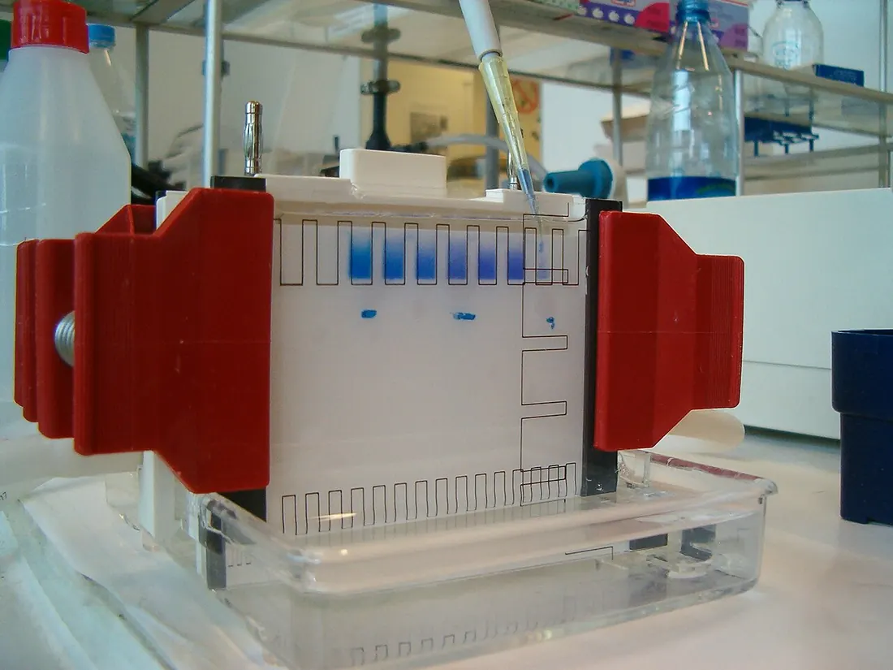
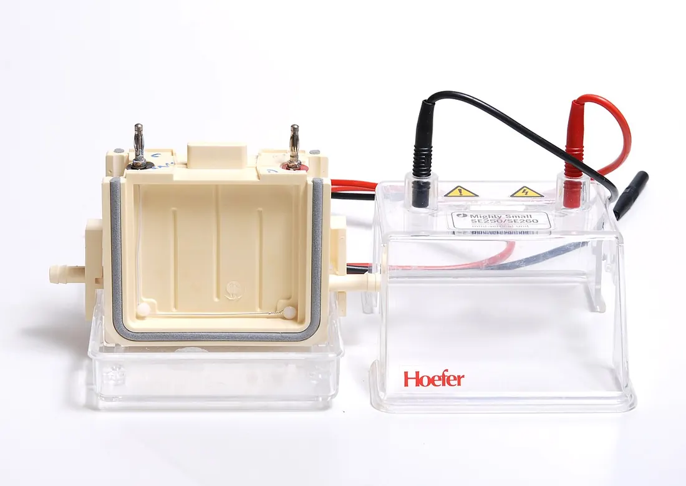
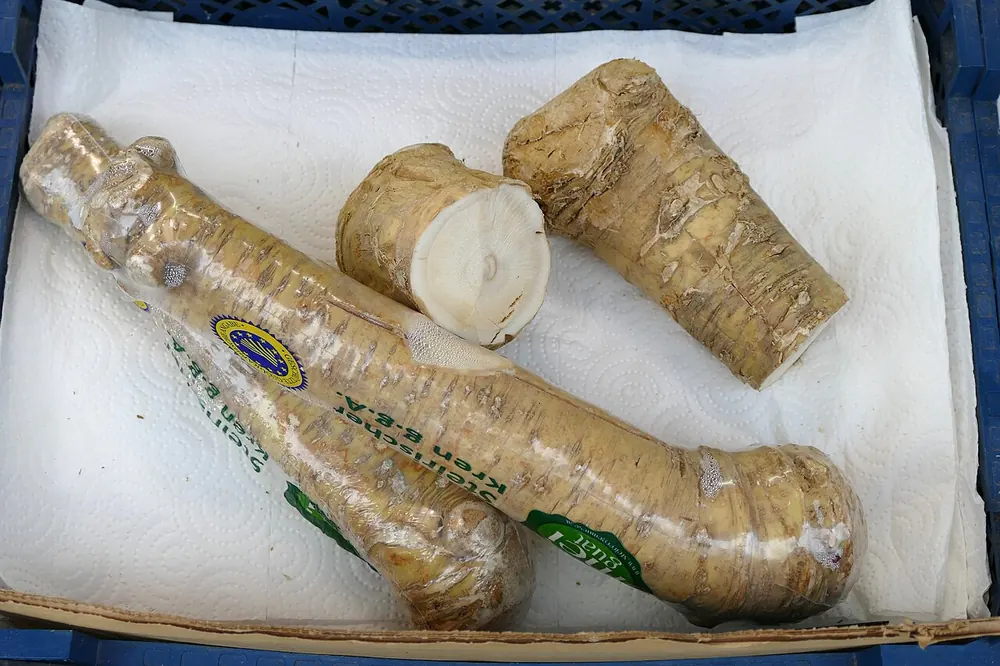

01Мета і план
Мета
Навчитися оцінювати фізіологічний стан рослинного й біотехнологічного матеріалу (листків, калюсу, проростків) за біохімічними маркерами — активністю окисно-відновних ферментів пероксидази й поліфенолоксидази та спектром ізоферментів пероксидази.
Знадобиться
- спектрофотометр СФ-46 або ФЕК (фотоелектроколориметр), кювети 1 см, секундомір;
- камера для вертикального електрофорезу, джерело живлення;
- фосфатні й тріс-гліциновий буфери, гваякол, H2O2, пірокатехін, розчини для ПААГ, бензидин, аскорбінова кислота;
- ступки, мірні колби на 25 мл, центрифуга.
Ви навчитеся
- знімати кінетичну криву оптичної густини й рахувати активність за формулою посібника;
- обирати довжину хвилі й розведення так, щоб залишатися в лінійному діапазоні приладу;
- готувати гелі за Девісом, проявляти зимограму й обчислювати Rf ізоферментів.
02Теоретичні відомості
Ферменти як біохімічні маркери
Біохімічний маркер — речовина або властивість (наприклад, активність ферменту), за зміною якої судять про стан організму, тканини чи клітинної культури. Для оцінки стійкості рослин до стресів і якості біотехнологічного матеріалу посібник пропонує два окисно-відновні ферменти — пероксидазу та поліфенолоксидазу. Обидва належать до класу оксидоредуктаз (КФ 1 — перший клас міжнародної класифікації ферментів; класи ферментів у Конспекті), обидва окиснюють феноли, а продукти реакції забарвлені. Тому швидкість реакції зручно стежити за тим, як темніє розчин.
За стресу (посуха, засолення, холод, ураження патогенами) у клітинах накопичуються активні форми кисню (АФК — пероксид водню H2O2, супероксид-аніон тощо) і розвивається окисний стрес. Пероксидаза разом із каталазою й супероксиддисмутазою входить до антиоксидантної системи і знешкоджує H2O2, тож її активність і число ізоферментів зазвичай зростають (антиоксидантний захист, стресостійкість). У культурі in vitro (у пробірці, поза організмом) ці ферменти пов’язані з диференціацією клітин, здерев’янінням стінок і побурінням експлантатів.
Пероксидаза і гваяколовий метод (ЛР 51)
Пероксидаза (КФ 1.11.1.7) — фермент, що містить гем (залізопорфірин), окиснює різні сполуки за допомогою пероксиду водню або органічних пероксидів. У рослин вона бере участь у диханні, знешкодженні H2O2, синтезі лігніну (полімеру, що здерев’янює клітинні стінки) й окисненні ауксину ІОК (індоліл-3-оцтової кислоти). Класичний субстрат для визначення — безбарвний гваякол (2-метоксифенол): пероксидаза окиснює його до бурого тетрагваяколу, який найсильніше поглинає світло при 470 нм:
Кількість продукту вимірюють за оптичною густиною D (поглинанням, абсорбцією) — десятковим логарифмом відношення інтенсивності світла, що падає на кювету (I0), до інтенсивності світла, що пройшло крізь неї (I). За законом Бугера — Ламберта — Бера вона пропорційна концентрації забарвленої речовини c і товщині шару l:
де ε — молярний коефіцієнт поглинання речовини на даній довжині хвилі. Пропорційність виконується лише до D ≈ 1–1,5: далі через розсіяне світло в приладі показання «лягають». Тому дуже активну витяжку розводять.
За посібником у кювету з робочою довжиною 1 см вносять 0,5 мл розчину гваяколу (183 мг на 25 мл води, ≈ 59 мМ), 1,5 мл 0,15 М фосфатного буфера pH 5,4, 0,5 мл ферментної витяжки й останнім — 0,5 мл 0,15 % H2O2. Разом V2 = 3,0 мл; у кюветі гваяколу ≈ 9,8 мМ, H2O2 ≈ 7,4 мМ. Нуль приладу встановлюють за контрольною кюветою, де H2O2 замінено 0,5 мл води. Оптичну густину при 470 нм записують через кожні 20 с протягом 2 хв. Активність виражають у відносних одиницях на 1 г сирої маси за 1 хв (с. 184–185):
де D1, D2 — оптична густина на початку й наприкінці досліду; t1, t2 — час початку й кінця, с; V — загальний об’єм витяжки, мл (25 мл); V1 — об’єм витяжки, взятий у реакцію, мл (0,5 мл); V2 — загальний об’єм рідини в кюветі, мл (3,0 мл); н — наважка, г (0,5 г); 60 — коефіцієнт переведення секунд у хвилини.
Приклад розрахунку. D1 = 0,035, D2 = 0,455 за 120 с: A = (0,455 − 0,035)·25·3,0·60 / (120·0,5·0,5) = 1890 / 30 = 63 відн. од./(г·хв). Формула «обертає» розведення: якщо взяти вдвічі менше витяжки (V1 = 0,25 мл), ΔD зменшиться вдвічі, а A не зміниться — це легко перевірити в моделі.
Поліфенолоксидаза (ЛР 53)
Поліфенолоксидаза (ПФО, КФ 1.10.3.1, катехолоксидаза) — мідьвмісний фермент: два атоми міді активного центру зв’язують молекулу кисню. Без участі H2O2 ПФО окиснює о-дифеноли (феноли з двома OH-групами поруч) киснем повітря до о-хінонів і води:
Хінони дуже реакційні: вони полімеризуються в бурі меланіни. Саме тому темніє зріз яблука чи картоплі, а в культурі in vitro буріють і гинуть експлантати й калюс — продукти окиснення фенолів токсичні для клітин. Субстрати мають різні робочі діапазони поглинання продуктів: пірокатехін — 366–420 нм, ДОФА (3,4-дигідроксифенілаланін) — 436–475 нм, хлорогенова кислота — 328–400 нм. За посібником у кювету 1 см вносять 0,5 мл ферментного препарату, 2,0 мл фосфатного буфера pH 7,4 і останнім — 0,5 мл 0,05 М пірокатехіну; одночасно з першою краплею вмикають секундомір і записують D420 через 20 с протягом 1 хв. Результат виражають як зміну оптичної густини за 1 хв на 1 г сирої маси (або на 1 мг білка) — у моделі її обчислено тією самою формулою (2) з t2 − t1 = 60 с.
Кінетична крива ПФО швидше відхиляється від прямої, ніж у пероксидази: хінони інактивують сам фермент («суїцидна» інактивація). Тому для розрахунку беруть початкову, лінійну ділянку.
Ізоферменти й електрофорез у ПААГ (ЛР 52)
Ізоферменти (ізоформи) — молекулярні форми одного ферменту, що каталізують ту саму реакцію, але відрізняються будовою, зарядом, розміром і, отже, рухливістю в електричному полі. Пероксидаза рослин представлена десятками ізоформ, специфічних для органів, фаз розвитку й стресів, тому ізоферментний спектр — набір смуг на гелі — слугує «відбитком» генотипу і стану тканини.
Розділяють ізоферменти електрофорезом — рухом заряджених молекул у гелі під дією електричного поля — у ПААГ (поліакриламідному гелі). Гель утворюється полімеризацією акриламіду з «зшивачем» N,N′-метилен-бісакриламідом; реакцію запускає персульфат амонію (ініціатор вільних радикалів), а ТЕМЕД (N,N,N′,N′-тетраметилетилендіамін) її прискорює. Що вища концентрація акриламіду (%T), то дрібніші пори і тим сильніше гель гальмує великі молекули.
Посібник використовує систему Девіса — диск-електрофорез з двох гелів: зверху концентруючий (великопористий, pH 6,7), де білки стискаються у вузьку зону, знизу розділяючий 7,5 % гель (pH 8,9), де вони розходяться за рухливістю. Блоки 115 × 115 × 2 мм, електродний тріс-гліциновий буфер pH 8,3; білки за цього pH заряджені негативно і рухаються до анода (+). Електрофорез ведуть спершу при 100 В, далі при 200 В до кінця розділення (у тексті посібника одиницю надруковано як «W»); положення фронту видно за барвником бромфеноловим синім (БФС).
| Компонент | Розділяючий 7,5 % | Концентруючий «2,5 %» |
|---|---|---|
| H2O | 1 частина | 3 частини |
| Буфер | «А» (тріс–HCl, pH 8,9) — 1 ч. | «В» (тріс–H3PO4, pH 6,7) — 1 ч. |
| Акриламід | «С» (30 % + 0,8 % біс) — 2 ч. | «Д» (10 % + 2,5 % біс) — 3 ч. |
| Персульфат амонію «F» (0,14 %) | 4 частини | 1 частина |
| ТЕМЕД | 4 краплі | 4 краплі |
| Акриламід у гелі | 30 · 2/8 = 7,5 % | 10 · 3/8 = 3,75 % |
| %T (акриламід + біс) / %C (частка біс) | 7,7 % / 2,6 % | 4,7 % / 20 % |
| Тріс у гелі | ≈ 0,38 М | ≈ 0,06 М |
Перевірка рецептури. Розділяючий гель справді виходить 7,5 %. А для концентруючого наведені частини (3 ч. розчину «Д» з 8) дають 3,75 % акриламіду, а не 2,5 %; 2,5 % вийде, якщо взяти 2 частини «Д» і 4 частини води. На концентрування великопористий гель 2,5–4 % працює однаково добре, але в протоколі варто зазначати фактичну концентрацію.
Після електрофорезу зони активності пероксидази «проявляють» прямо в гелі — отримують зимограму (електрофореграму, забарвлену за активністю ферменту). Гель кладуть у суміш бензидину, аскорбінової кислоти й H2O2: пероксидаза окиснює бензидин до синього продукту, а аскорбінова кислота відразу відновлює його назад. Забарвлення з’являється лише тоді, коли аскорбат у зоні вичерпано, тому за посібником
— час розвитку забарвлення прямо пропорційний концентрації аскорбінової кислоти Cаск і обернено пропорційний активності ізоферменту a; k — коефіцієнт для даних умов. Найактивніші смуги з’являються першими. Кожну ізоформу характеризують відносною електрофоретичною рухливістю:
де l — відстань від початку розділяючого гелю до середини смуги та до фронту БФС. Rf лежить між 0 і 1 і не залежить від тривалості електрофорезу, тож гелі різних дослідів можна порівнювати.
Безпека. Акриламід (мономер) — нейротоксин, бензидин — канцероген. Працюйте в рукавичках, бензидиновий розчин готуйте у витяжній шафі. У сучасних лабораторіях бензидин часто замінюють менш небезпечними хромогенами (наприклад, 3,3′,5,5′-тетраметилбензидином або гваяколом); принцип проявлення той самий.






Що в моделях — посібник, а що — наближення
З посібника взято об’єми й концентрації реагентів, довжини хвиль, інтервали відліків, формулу (2), склад гелів, режим електрофорезу і залежність (3). Наближеннями є: «істинні» активності зразків і набір ізоформ на доріжках (умовні навчальні дані); інактивація ферменту під час реакції (кінетика першого порядку); 0,4 % розсіяного світла у фотометрі; зміна Rf з концентрацією гелю за лінійною залежністю Фергюсона (lg Rf спадає пропорційно %T, тим крутіше, чим більша молекула). Числа в моделі ілюструють закономірності, а не замінюють реальних вимірювань.
Поглинання світла розчином, D = lg(I₀/I); безрозмірна величина.
Маса свіжої тканини до висушування; активність рахують на 1 г сирої маси.
Центрифугат (рідина над осадом) гомогенату тканини в буфері.
Фотоелектроколориметр — простіший фотометр зі світлофільтрами замість монохроматора.
Молекулярні форми ферменту з однаковою дією, але різною будовою й рухливістю.
Гель після електрофорезу, забарвлений за активністю ферменту.
Відносна рухливість: відстань смуги, поділена на відстань фронту барвника.
Продукти окиснення о-дифенолів; полімеризуються в бурі меланіни.
Будова ферментів і кінетика реакцій — у Конспекті: кінетика ферментативних реакцій, вплив pH і температури. Модель цієї теми — нижче.
03Інтерактивна модель
Три вкладки — три лабораторні роботи. У кожній змінюйте зразок і параметри: статичний кадр і графіки одразу показують розрахунок, а кнопка «▶ Запустити» проводить дослід у прискореному часі. Теорія до моделей — у підрозділах пероксидаза, ізоферменти, поліфенолоксидаза.
Кінетика окиснення гваяколу в кюветі СФ-46
Бурий тетрагваякол накопичується в кюветі; стрілка приладу й графік показують зростання D при 470 нм. Активність — за формулою (2).
Вертикальний диск-електрофорез і зимограма ізопероксидаз
Зразки шести тканин розділяються в 7,5 % ПААГ, потім гель проявляють бензидином з аскорбатом: смуги з’являються в порядку спадання активності.
Окиснення пірокатехіну поліфенолоксидазою
Жовтий о-бензохінон швидко буріє; оберіть субстрат і довжину хвилі з його робочого діапазону, відліки — 1 хв через 20 с.
04Хід лабораторних робіт
Робота 51. Визначення активності пероксидази с. 184–185
Реактиви: 0,15 М фосфатний буфер pH 5,4; 0,15 % H2O2; розчин гваяколу (183 мг на 25 мл води); рослинний матеріал.
- Наважку листків або калюсу 500 мг розтерти в ступці з невеликою кількістю фосфатного буфера, перенести в мірну колбу на 25 мл і довести буфером до мітки.
- Відстояти 10 хв, центрифугувати 10 хв при 4000 об/хв; центрифугат — ферментна витяжка.
- Контрольна кювета (1 см): 0,5 мл гваяколу + 1,5 мл буфера + 0,5 мл витяжки + 0,5 мл води. За нею встановити стрілку приладу на нуль при 470 нм.
- Дослідна кювета: 0,5 мл гваяколу + 1,5 мл буфера + 0,5 мл витяжки + 0,5 мл 0,15 % H2O2 (останнім), перемішати, увімкнути секундомір.
- Записувати D470 через кожні 20 с протягом 2 хв; побудувати кінетичну криву.
- Обчислити активність за формулою (2): V = 25 мл, V1 = 0,5 мл, V2 = 3,0 мл, н = 0,5 г, t2 − t1 = 120 с. Якщо D перевищує ≈ 1, повторити з розведеною витяжкою.
Робота 52. Вивчення ізоферментного спектра пероксидаз с. 185–186
- 2,5 г листків гомогенізувати з трикратним об’ємом тріс-гліцинового буфера pH 8,3 (тріс 6 г, гліцин 28,8 г, вода до 1 л; ≈ 0,05 М тріс, 0,38 М гліцин).
- Центрифугувати 20 хв при 2000 g; для електрофорезу взяти супернатант.
- Безпосередньо перед аналізом приготувати розчини «А», «В», «С», «Д», «F» і залити гелі за таблицею в теорії: спершу розділяючий 7,5 %, після полімеризації — концентруючий з гребінкою для лунок. Блок 115 × 115 × 2 мм.
- Внести зразки з бромфеноловим синім, залити електродний тріс-гліциновий буфер pH 8,3. Електрофорез: спершу 100 В, далі 200 В до кінця розподілу (фронт БФС за 0,5 см від низу гелю).
- Проявлення: 20 мл основного розчину бензидину (2 г бензидину в 18 мл льодяної оцтової кислоти + 72 мл води) змішати з 70,4 мг аскорбінової кислоти, 20 мл 0,6 % H2O2 і 60 мл води (у 100 мл: ≈ 4 мМ аскорбату, ≈ 0,12 % H2O2). Занурити гель і стежити за появою смуг.
- Виміряти відстані до смуг і фронту, обчислити Rf за формулою (4), замалювати зимограму, порівняти зразки.
Робота 53. Визначення активності поліфенолоксидази с. 186–187
Реактиви: 0,05 М розчин пірокатехіну; фосфатний буфер pH 7,4 (у посібнику надруковано «1,15 М» — імовірно, 0,15 М); проростки або калюс.
- Наважку 500–1000 мг розтерти в ступці з фосфатним буфером (pH 7,0–7,4), перенести в мірну колбу на 25 мл, довести до мітки.
- Центрифугувати 60 хв при 30 000 g.
- У кювету 1 см внести 0,5 мл ферментного препарату, 2,0 мл буфера pH 7,4 і останнім — 0,5 мл пірокатехіну; з першою краплею ввімкнути секундомір. Контроль — дистильована вода.
- Вимірювати D420 протягом 1 хв з інтервалом 20 с.
- Результат виразити як зміну оптичної густини за 1 хв на 1 г сирої маси (або на 1 мг білка).
05Контрольні питання
Дайте визначення ферментам пероксидаза й поліфенолоксидаза та розкажіть про їхні функціональні особливості.
Чому H2O2 вносять у кювету останнім і чому контрольна кювета — без нього?
Навіщо у формулі множники V/V1, V2 і 60?
Що робити, якщо оптична густина наприкінці досліду більша за 1,5?
Чим концентруючий гель відрізняється від розділяючого?
Чому сильніші смуги на зимограмі з’являються раніше?
Чому Rf, а не просто відстань, характеризує ізофермент?
Як ізоферментний спектр пероксидази використовують як маркер стійкості?
06Література
- Мельничук, М. Д., & Кляченко, О. Л. (2014). Біотехнологія в агросфері: навчальний посібник (с. 184–188). НУБіП України.
- Chance, B., & Maehly, A. C. (1955). Assay of catalases and peroxidases. Methods in Enzymology, 2, 764–775. https://doi.org/10.1016/S0076-6879(55)02300-8
- Davis, B. J. (1964). Disc electrophoresis — II. Method and application to human serum proteins. Annals of the New York Academy of Sciences, 121(2), 404–427. https://doi.org/10.1111/j.1749-6632.1964.tb14213.x
- Ferguson, K. A. (1964). Starch-gel electrophoresis — application to the classification of pituitary proteins and polypeptides. Metabolism, 13(10), 985–1002. https://doi.org/10.1016/S0026-0495(64)80018-4
- Passardi, F., Cosio, C., Penel, C., & Dunand, C. (2005). Peroxidases have more functions than a Swiss army knife. Plant Cell Reports, 24(5), 255–265. https://doi.org/10.1007/s00299-005-0972-6
- Mayer, A. M. (2006). Polyphenol oxidases in plants and fungi: Going places? A review. Phytochemistry, 67(21), 2318–2331. https://doi.org/10.1016/j.phytochem.2006.08.006